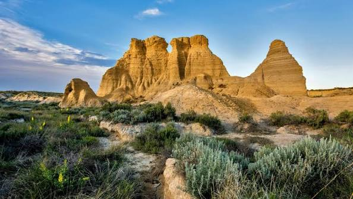

Kansas ist ein im Mittleren Westen gelegener Bundesstaat der Vereinigten Staaten. Sein Name leitet sich ab von dem Wort Kansa und bedeutet in der Sprache der Sioux „Volk des Südwinds“.
Kansas hat den Beinamen Sunflower State (Sonnenblumenstaat). Die Hauptstadt des landwirtschaftlich geprägten Bundesstaates ist Topeka.
Quellen- und Lizenzhinweis:
Dieser Text basiert auf dem Wikipedia-Artikel
Kansas
(geänderte Fassung) und steht unter der Lizenz
Creative Commons Attribution-ShareAlike 4.0 International (CC BY-SA 4.0).
Das Bild ist von
fvw.de